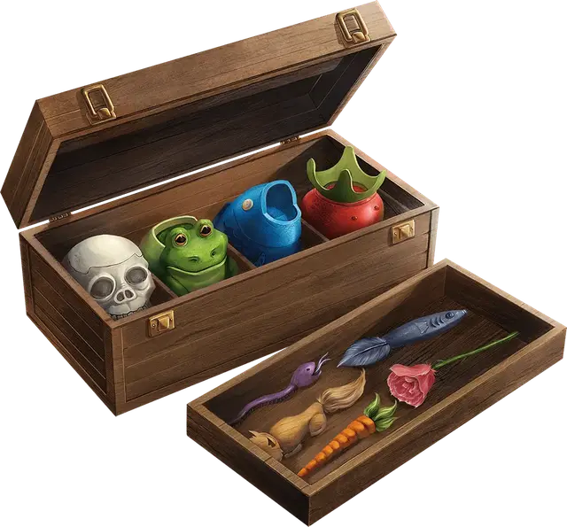

Чудесные краски Нолзура
Nolzur’s Marvelous Pigments
Чудесный предмет, очень редкий

Рекомендованная стоимость 2 501-25 000 зм
Обычно эти краски находят в 1к4 баночках в красивом деревянном ящике вместе с кисточкой (весь набор весит 1 фунт). Эти краски позволяют рисовать трёхмерные предметы в двух измерениях. Краска сама стекает с кисти и формирует желаемый предмет, когда вы концентрируетесь на изображении.
Одной баночки достаточно, чтобы покрыть 1000 квадратных футов поверхности, что позволяет вам создавать неживые предметы и особенности местности — такие как двери, ямы, цветы, деревья, решётки, комнаты или оружие — не превышающие в объёме 10000 кубических футов. Разрисовать 100 квадратных футов можно за 10 минут.
Когда вы заканчиваете рисовать, предмет (или особенность местности) становится реальным, немагическим предметом. Нарисовав дверь на стене, вы создаёте настоящую дверь, которая ведёт на ту сторону стены. Нарисовав яму на полу, вы получаете настоящую яму, а её глубина учитывается при подсчёте объёма создаваемого предмета.
То, что создаётся этими красками, не должно стоить больше 25 зм. Если вы нарисуете что-то, что стоит больше (например, бриллиант или кучу золота), предмет будет выглядеть настоящим, но тщательное исследование даст понять, что он изготовлен из глины, кости или другого бросового материала.
Если вы нарисуете энергию, такую как огонь или электричество, в конце рисования энергия возникает, но тут же исчезает, не причиняя ничему урон.